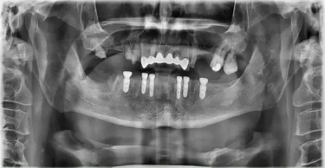

Dental implants
Healing after dental implants: what to expect
Healing from an implant happens in two stages: the first few days after surgery, and the slower bonding of the implant to your bone.

Two kinds of healing
When people ask how long an implant takes to heal, they are usually asking about two different things. The first is recovery from the minor surgery itself, when your gums and mouth settle down. This takes days to a couple of weeks. The second is osseointegration, the process in which the implant bonds with your jawbone. That takes several months, and it happens quietly while you go about your life.
Both stages matter. Skipping steps or rushing the second one puts the implant at risk, so patience pays off.
The stages of treatment
Placement
You receive local anesthetic so you do not feel pain. A small opening is made in the gum and the implant is placed in the jawbone. The gum is closed around it or around a small cap.
Bonding
Over the following months, the bone grows onto the implant and holds it firmly. Your dentist checks your progress, and imaging confirms that the bond has formed.
Connector and impressions
When the implant is ready, a small connector called an abutment is attached, and your gums are given a short time to settle around it. Scans or impressions are taken so the crown can be made to match your teeth.
Final crown
The custom crown is attached. This step usually needs no surgery, and most patients find it the easiest part.
The exact steps and timing vary. Some cases combine steps, and some patients qualify for a temporary tooth on the day of surgery. See who qualifies for same-day implants for more on that.
What is normal in the first few days
Some bleeding, swelling and tenderness after surgery are expected. Here is what usually helps:
- Bite gently on clean gauze for the time your dentist recommends to control bleeding.
- Use cold packs on the outside of your cheek to reduce swelling.
- Take pain medication as directed once the anesthetic wears off.
- Eat soft, cool foods at first, then return to your normal diet gradually.
- Chew on the other side of your mouth until your dentist says the area is ready.
- Rinse gently with warm salt water if you were told to, and follow your dentist's instructions for brushing and flossing near the site.
Your dentist will give you instructions that fit your case. Follow those over anything you read online, including this article.
What can slow healing
Everyone heals at their own pace. These factors can lengthen the process:
- Smoking, which reduces blood flow to the gums and bone
- A bone graft, or the need for several implants at once
- Thin or weak bone
- Gum disease that has not been treated
- Skipping aftercare instructions or daily cleaning
Tell your dentist about your health history and any medications. It helps them plan a safer and smoother recovery.
When to call your dentist
Do not wait for your next appointment if you notice any of the following: bleeding that does not slow down, swelling that keeps getting worse after the first few days, a fever, a bad taste or discharge from the site, pain that increases instead of fading, or an implant that feels loose. Infection around an implant can be treated more easily when it is caught early.
Once your crown is in, the care continues. Daily brushing and flossing and regular checkups protect the implant for years. Our dental implants page explains the full treatment from start to finish.
Have questions about recovery, or a symptom that does not seem right? Call your nearest office, or book a consultation to plan your implant with Dr. Kwon.